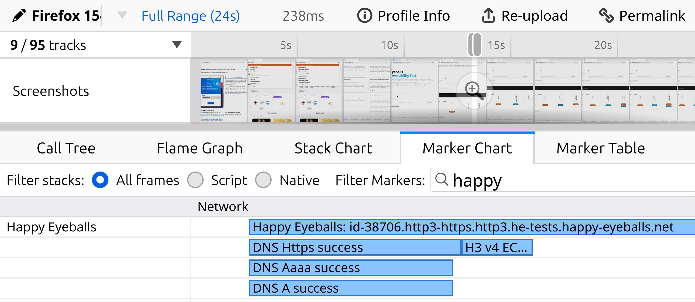

Happy Eyeballs v3 in Firefox
An introduction, and results from the Beta A/B experiment.
Sec-Priv-Necko · Kershaw Chang & Max Inden
Why “Happy Eyeballs”?
- The eyeballs are the users: real people waiting on a page, and people feel latency. This is not a server-to-server link, where throughput is what counts.
- Happy eyeballs means happy users: race the options in parallel, take the first that answers, so a slow or dead path never makes someone wait.
- It has a history: v1 (RFC 6555) for IPv4 vs IPv6, widely implemented; v2 (RFC 8305) refined it, but saw little uptake.
- v3 (draft) is being implemented now, widening the race to protocols (QUIC vs TCP) and DNS (HTTPS records).
A cardinality explosion
Connecting to a modern origin means choosing among:
- IPv4 or IPv6
- TCP + TLS or QUIC
- DNS A, AAAA or HTTPS records
- Alt-Svc header or HTTPS-record ALPN
- ECH or plaintext SNI
Part 1: Resolution
Fire the DNS queries together (HTTPS, AAAA, A), then move on as soon as one of these holds:
Either
- some positive address answers are in, and
- the preferred family has answered (positive or negative), and
- the HTTPS/SVCB answer is in (or negative).
Or
- some positive address answers are in, and
- the Resolution Delay has passed with nothing more arriving.
Source: draft-ietf-happy-happyeyeballs-v3, §4.2.
Part 2: Connection attempts
- Sort the endpoints: by protocol + security (ALPN, ECH), then service priority, then RFC 6724, interleaving address families.
- Race attempts one at a time, staggered by the Connection Attempt Delay.
- First success wins; the rest are cancelled.
Default preference: IPv6 > IPv4, QUIC > TCP.
Two timers
Resolution Delay
- How long to wait for the preferred family / HTTPS RR before committing.
- Draft default 50 ms. Firefox: 25 ms (D309547).
Connection Attempt Delay
- Stagger between successive attempts.
- Draft default 250 ms. Firefox: 50 ms with a ×2 multiplier (50, 150, 350, 750 ms …).
Each dot is a staggered connection attempt: a 50 ms base with a ×2 back-off, versus the draft’s single 250 ms.
Rollout status
- Happy Eyeballs v3 is enabled by default in Nightly, and now rolling out on Beta on the way to Release.
- Tracking the draft closely: draft-ietf-happy-happyeyeballs-v3, with a couple of tuned delay deviations.
- Written in Rust: a deterministic, sans-I/O state machine (no network, no clock). The caller drives all I/O and passes time in explicitly.
- No dependency on Firefox; embeds in Necko’s C++ event loop.
- Permissive license (MIT OR Apache-2.0). Input and contributions welcome.
- Every scenario is a plain unit test, so behaviour is easy to pin down and easy to review.
github.com/mozilla/happy-eyeballs
The Beta experiment
A/B on Firefox Desktop Beta, 30 Jul–18 Aug 2026, control vs HEv3, ~46M successful runs/day. Segmented by DoH, since it strongly affects how often an HTTPS record is available for HEv3 to act on (the OS resolver returns them too).
More page loads over HTTP/3
Share of page loads over HTTP/3, control vs HEv3, HEv3 higher on 20/20 days. The gain concentrates where HEv3 can act: with DoH, 16.6% → 27.9% (+11.3pp, +68%). Without DoH only +1.1pp.
Faster time to request start
navigationStart → requestStart (DNS + TCP/TLS setup, where HEv3 acts), DoH enabled, change vs control (below zero is faster). The tail moves most: P95 -11.1%, P99 -21.7% (2770 ms → 2168 ms), faster on 20/20 days. Without DoH it is roughly flat, so the pooled number understates the effect.
First contentful paint: a crossover
HEv3 change in FCP, DoH enabled (below zero is faster). Overall FCP improves slightly everywhere; with DoH the fast half pays a little (P25 +6.0%) while the slow tail gains sharply (P99 -10.0%, faster on 20/20 days). HEv3 helps where it hurts.
The first attempt almost always wins
Which staggered attempt connected, HEv3 arm, client-normalized. 95.1% win on the first endpoint, 99.53% within two, stable across all 19 days (94.9–95.5%). So HEv3 mainly trims the long tail, not the median.
Significantly increased HTTP/3 on Firefox for Android (Fenix)
Share of responses over HTTP/3 on Firefox for Android, Nightly, by build date. When HEv3 turned on (late July) the share stepped up from ~14% to ~18% and held. Source: GLAM: networking_http_response_version (Android Nightly).
Proposal: try HTTP/3 optimistically
Step 1, Optimistic Alt-Svc (bug 2060496): if we have ever seen Alt-Svc: h3 for an origin, reuse that mapping even after it expires. Race HTTP/3 on the next visit instead of falling back to HTTP/2 and re-learning it.
Step 2, Optimistic QUIC: with no prior signal at all, try HTTP/3 anyway, racing it against HTTP/2.
- Still listen for an HTTPS RR: it also carries ECH, so it stays useful.
- With Happy Eyeballs v3 and a low attempt delay, a failed QUIC race costs little: TCP is already in flight beside it.
Questions? Proposals?
github.com/mozilla/happy-eyeballs/issues · max-inden.de
Backup
Extra detail, if time allows.
The happy_eyeballs_* metrics
Firefox Nightly, Glean, read from GLAM.
End-to-end time, failed
Failures either fail fast (P75 50 ms) or grind to the 10 s cap; little in between. Source: GLAM: end_to_end_time_failed.
Winning attempt index
Which staggered attempt connected, Nightly population. 84% win on the first attempt. Source: GLAM: winning_attempt_index.
Time to first attempt
Time before the first attempt fires, mostly the DNS answer arriving. Median 3 ms, P75 27 ms. Source: GLAM: time_to_first_attempt.
DNS resolution time, by record type
Per record type, log scale. HTTPS records resolve as fast as A/AAAA. Source: GLAM: dns_resolution_time.
What HTTPS records carry
Of connections that saw an HTTPS record, the share carrying each SvcParam. Most advertise h3 (~80%) and about half carry address hints; only ~16% carry ECH. Source: GLAM: https_rr_features.
HTTPS-RR features, by resolver
Same SvcParams, DoH vs the OS resolver. The two look alike: h3 ~76%, hints ~45%, ECH ~16% either way. The record’s contents do not depend on how it was resolved. Source: GLAM: by_resolver.
How connections learn about h3
- 35% of connections (84% of the h3-capable ones) learn h3 only via Alt-Svc: a round trip they need not pay.
- Only ~3% via an HTTPS record alone, ~4% via both: no round trip.
- Motivation for publishing HTTPS records with
alpn=h3.
Firefox Nightly. Source: GLAM: h3_discovery.
The wasted round trip
Alt-Svc only
HTTP/3 only on the second connection.
HTTPS record
HTTP/3 on the first connection.
Save a round trip
- Many sites send
Alt-Svc: h3 but publish no HTTPS record.
- Every first visit then wastes a round trip: connect over HTTP/2, read the header, upgrade to HTTP/3 only next time.
- Publish an HTTPS record with
alpn="h3" and the client goes straight to QUIC on connection #1.
- Bonus: the HTTPS record is the only way to deliver ECH.
savearoundtrip.com: check your domain.
Experiment: HTTP/3 usage day by day (DoH enabled)
Daily HTTP/3 share in the DoH-enabled segment: HEv3 sits clearly above control every one of the 20 days.
How Firefox deviates from the draft
- mozilla/happy-eyeballs: a deterministic, sans-I/O state machine, reusable outside Firefox.
- Attempt delay: a 50 ms base with ×2 back-off (50, 150, 350, 750 ms), not the draft’s flat 250 ms.
- Resolution delay: 25 ms, not 50 ms (D309547), tuned from the telemetry above.
- Also interleaves protocol variant with address family, so QUIC and the other family are reached early.
- Optimistic DNS: Firefox uses DNS answers optimistically rather than blocking on every fresh lookup, so resolution rarely stalls the race (similar to draft-gakiwate-dnsop-optimistic-dns).
- Potential future deviation: no longer wait for the preferred family’s DNS record response (e.g. IPv6 / AAAA), wait only for the HTTPS RR before racing (PR 116). Not enabled today.
- Potential future addition: proxy awareness (MASQUE connect-udp vs HTTP CONNECT ordering), WebSocket / WebTransport EXTENDED CONNECT.
Real-world edge cases
- DNS negative answers: honour the SOA-derived negative TTL (RFC 2308, bug 2049173), and do not re-resolve them mid-race (bug 2049178).
- DNS coalescing: a v4-only or v6-only lookup could not reuse a pending
AF_UNSPEC lookup (bug 2044254).
- Multi-CDN: a non-standard HTTPS-RR/CNAME consistency check rejected legitimate multi-CDN records; reverted to resolve each
TargetName independently (RFC 9460 §10.4.4, PR 104).
- Web standards:
dnsLookupEnd stopped matching the Resource Timing spec (bug 2047648).
Gotchas from the Happy Eyeballs v3 meta bug and the happy-eyeballs crate, most now fixed.
Debugging Happy Eyeballs
Inspect live state
about:networking: the HTTP, Sockets, and DNS tabs show live connections, open sockets, and cached lookups.- The Alt-Svc page: which origins advertised h3, and whether it is still valid.
- The DNS Lookup tool: resolve a host on demand and see its A / AAAA and HTTPS records.
Capture a trace: the Firefox Profiler
- Enable it from profiler.firefox.com (the page walks you through adding the toolbar button).
- Start profiling with the Networking preset.
- Load the site you want to debug, then stop.
- Open the parent-process Socket Thread marker chart: each attempt, its timing, and which one won are right there.
Example profile: share.firefox.dev/4wOr8Fc.
What the trace shows

Firefox Profiler, Marker Chart filtered to happy: the DNS answers (HTTPS, AAAA, A) and the winning H3 attempt, per connection. share.firefox.dev/4wOr8Fc.